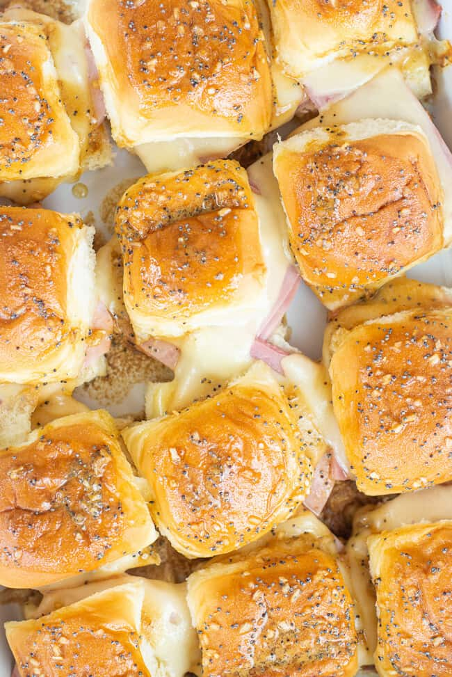

Hawaiian Ham and Cheese Sliders

This is my go to for parties and event functions. This is more of a loose guide. Make any changes you need to make them taste better for you!
Ingredients
- 12 count pack of Kings Hawaiian Rolls
- 12 slices of swiss cheese
- 12 ounces of thin sliced Ham
- 1/2 cup of melted butter
- 2 tablespoons Worcestershire sauce
- 2 teaspoons of dried minced onion
- 1 teaspoon of ground mustard
Steps
- Slice all of the rolls in half and place the bottom halves in a 9x13 baking dish
- Place ham and cheese on the bottom of the sliced rolls. Cover the top half of the roll.
- Mix together the remaining five ingredients in a small bowl and spoon over the tops of the sandwiches.
- Cover in tin foil and bake in pre-heated oven at 350 for 20 minutes.
- Take cover off and cook for another 5 minutes. Enjoy!